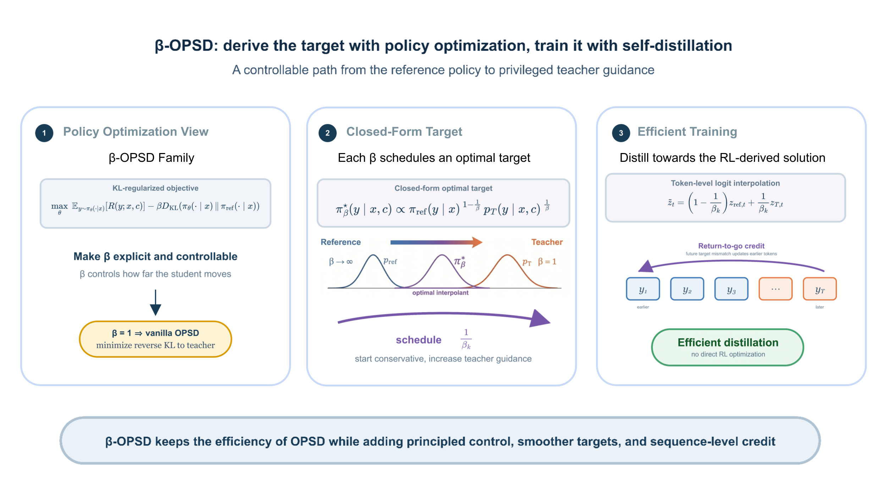

β-OPSD: Deriving with Policy Optimization, Training with Self-Distillation
Abstract
On-policy self-distillation (OPSD) is a promising approach to improve reasoning language models, but it remains brittle in practice: making it work reliably often requires substantial engineering effort. We identify a structural source of this difficulty: vanilla OPSD is precisely the β = 1 member of a broader policy-optimization family, where β weights the KL penalty anchoring the student to a reference policy. This equivalence turns β from an implicit value fixed at one into a controllable regularization parameter, yielding a more general formulation that trades off proximity to a reference policy against privileged teacher guidance. We introduce β-OPSD and derive its optimal policy as a geometric interpolation between the reference policy and the privileged teacher. Directly optimizing this objective with reinforcement learning, however, would be costly and high-variance. Rather than optimize the RL objective directly, we turn its closed-form solution into a distillation target. Each value of β selects a target along the reference-to-teacher path, which we implement efficiently by mixing their token-level logits. In this way, inexpensive distillation approximates the solution of expensive policy optimization. Return-to-go credit assignment further aligns token updates with the sequence-level objective while retaining the simplicity of OPSD. Experiments on mathematical reasoning benchmarks show that β-OPSD consistently outperforms vanilla OPSD, improving optimization stability and downstream reasoning performance. Our results provide a principled route from self-distillation to policy optimization and back—without sacrificing the efficiency that makes OPSD practical.